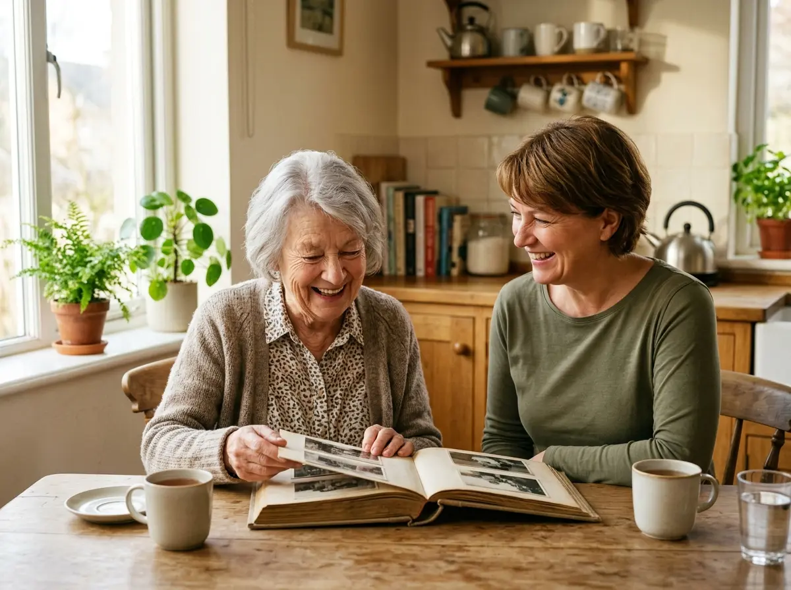
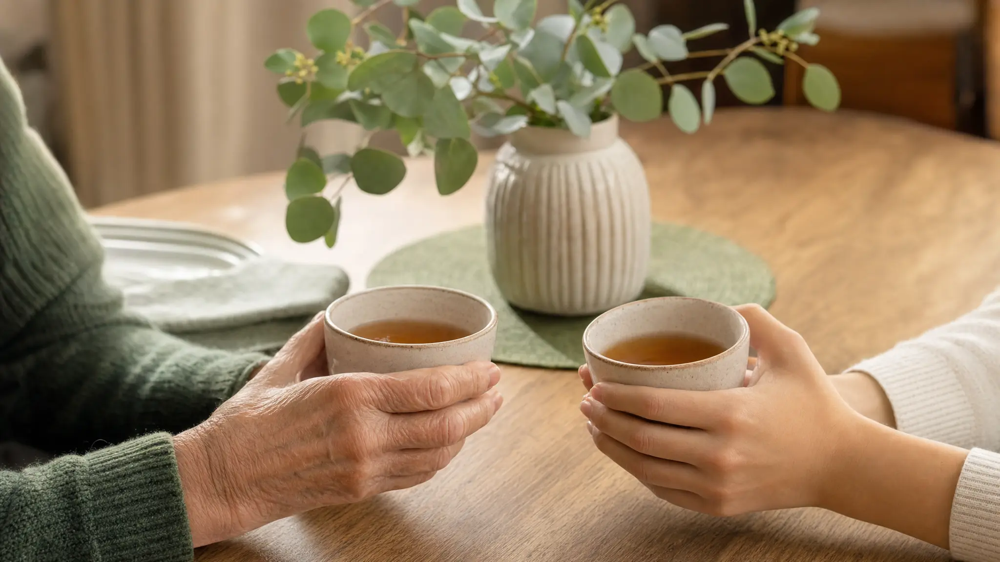

Raum im Leben Service UG — Alltagsbegleitung und Unterstützung in Schwalmtal
Mehr Unterstützung im Alltag – für Sie selbst oder für einen Menschen, der Ihnen am Herzen liegt
Alltagsbegleitung, Haushaltshilfe und Entlastung für pflegende Angehörige — mit Zeit, Aufmerksamkeit und echter menschlicher Nähe.
Für Sie bedeutet das : Mehr Sicherheit. Mehr Entlastung. Mehr Lebensqualität

Wenn der Alltag anstrengender wird,
als er sein sollte.
Manchmal geschieht es langsam. Man merkt es nicht sofort — und wenn, fühlt es sich schwer an, darüber zu sprechen.
- Der Haushalt fällt schwerer als früher
- Termine werden unübersichtlich
- Alleine sein fühlt sich nicht mehr gut an
- Es wird weniger unternommen als früher
- Dinge bleiben liegen, die früher selbstverständlich waren
- Gespräche werden kürzer oder seltener
Oft ist es nicht die Pflege, die fehlt.
Sondern Unterstützung im Alltag — und ein Mensch, der regelmäßig da ist.
Betreuung, die den Alltag leichter macht.
Ohne Pflege.
Viele Menschen zögern, weil sie denken: "Ich brauche doch noch keine Pflege." Genau richtig — denn das ist nicht das, was wir anbieten.
- ✓ Gesellschaft leisten und zuhören
- ✓ Im Haushalt helfen und entlasten
- ✓ Spazierengehen und gemeinsam Zeit verbringen
- ✓ Termine begleiten und Besorgungen erledigen
- ✓ Angehörige regelmäßig entlasten
- ✗ Kein Pflegedienst
- ✗ Keine medizinische Versorgung
- ✗ Keine pflegerischen Tätigkeiten
- ✗ Kein Ersatz für eine Arztbehandlung
Unsere Leistungen
Alltägliche Unterstützung, die wirklich spürbar macht, dass jemand da ist — verlässlich, warm und ganz ohne bürokratisches Gefühl.
Alltagsbegleitung & Betreuung
- Gespräche und soziale Betreuung
- Gemeinsame Spaziergänge
- Freizeitaktivitäten
- Aktivierungsangebote
- Beaufsichtigung
Begleitdienste außer Haus
- Arzttermine
- Behördengänge
- Einkäufe
- Besorgungen
Hauswirtschaftliche Unterstützung
- Reinigung der Wohnung
- Wäschepflege
- Einkäufe
- Zubereitung einfacher Mahlzeiten
- Unterstützung bei der Haushaltsorganisation
Entlastung pflegender Angehöriger
- Stundenweise Betreuung
- Beaufsichtigung in Abwesenheit der Angehörigen
- Alltagsaufgaben
- Verhinderungspflege
- (nicht pflegerisch)
Beratungseinsätze §37,3 SGB XI
Wir führen die gesetzlich vorgeschriebenen Beratungseinsätze für Pflegegeldbezieher durch und stehen Ihnen bei Fragen zur Pflege zur Seite.
Haben Sie ein weiteres Anliegen, welches Sie in unserem Auszug aus unserem Leistungskatalog nicht finden können? Dann kontaktieren Sie uns gerne und wir helfen Ihnen, Ihre persönlichen Alltagsherausforderungen zu lösen.
Für wen sind wir da?
Wir begleiten Menschen, die noch keine Pflege brauchen — aber einfach jemanden möchten, der da ist.
Ältere Menschen, die allein zuhause leben
Menschen, die Gesellschaft und Unterstützung suchen
Menschen mit Demenz oder Orientierungsschwierigkeiten
Menschen nach Krankenhausaufenthalt
Angehörige, die sich um ihre Eltern sorgen
Familien, die sich Entlastung wünschen

So beginnt es — ganz ohne Druck.
Kein bürokratischer Aufwand. Kein Vertragsdruck. Wir lernen Sie zunächst in Ruhe kennen.
Erstes Gespräch
Wir hören zu. Ohne Formulare, ohne Druck — einfach ein Gespräch darüber, was Sie beschäftigt und was helfen könnte.
Persönliches Kennenlernen
Wir besuchen Sie zu Hause. Vertrauen entsteht durch Begegnung — und dafür nehmen wir uns die Zeit.
Gemeinsamer Start
Wir beginnen in Ihrem Tempo — so, wie es sich für Sie richtig anfühlt. Nichts wird überstürzt.
Wir ersetzen nicht — wir ergänzen. Unsere Aufgabe ist es, Ihnen den Alltag zu erleichtern, damit Sie so lange wie möglich selbstbestimmt und würdevoll in Ihrem Zuhause leben können.
Warum Raum im Leben?
Nicht weil wir die Größten sind — sondern weil wir wirklich zuhören.
Flexibilität
Wir passen uns Ihrem Rhythmus an, nicht umgekehrt.
Zuhören zuerst
Wir nehmen uns Zeit, Ihre Bedürfnisse wirklich zu verstehen.
Individuell
Maßgeschneiderte Unterstützung statt Standardlösungen.
Transparenz
Klare Absprachen und ehrliche, offene Kommunikation.
Würde & Respekt
Ein wertschätzender Umgang auf Augenhöhe.
Was viele Menschen bewegt.
Diese Fragen hören wir oft. Sie sind alle berechtigt — und wir beantworten sie gerne.
„Ich brauche doch keine Hilfe..."
Das hören wir oft — und es ist ein verständlicher Gedanke. Unterstützung anzunehmen bedeutet nicht, abhängig zu sein. Es bedeutet, klug mit den eigenen Ressourcen umzugehen.
Wer sich früh ein wenig Entlastung holt, bleibt länger selbstständig — und lebt entspannter. Es geht nicht darum, dass etwas nicht mehr geht. Es geht darum, dass der Alltag leichter und angenehmer wird.
„Meine Eltern wollen keine fremde Person im Haushalt."
Das ist ein sehr häufiges und völlig verständliches Gefühl. Vertrauen entsteht nicht auf Bestellung — es wächst langsam, durch Begegnung und Verlässlichkeit.
Deshalb beginnen wir nie mit einem festen Plan. Wir kommen zunächst einfach zum Kennenlernen — ganz ohne Druck, ohne Versprechen, ohne Erwartung. Wenn es sich gut anfühlt, gehen wir gemeinsam einen kleinen Schritt weiter.
„Ist das ein Pflegedienst?"
Nein. Wir sind ausdrücklich kein Pflegedienst und führen keine medizinischen oder pflegerischen Tätigkeiten durch.
Was wir anbieten, ist etwas anderes — und oft genauso wichtig: Gesellschaft, Alltagsunterstützung, Haushaltshilfe und die Entlastung pflegender Angehöriger. Einfach ein Mensch, der regelmäßig da ist und hilft, wo es gebraucht wird.
„Wann ist der richtige Zeitpunkt?"
Meistens früher, als man denkt. Viele warten, bis der Alltag wirklich belastend wird — dabei wäre frühzeitige Unterstützung viel entspannter für alle Beteiligten.
Der richtige Zeitpunkt ist dann, wenn Sie das erste Mal das Gefühl haben: „Das könnte leichter sein." — Das reicht. Ein unverbindliches Gespräch kostet nichts und verpflichtet zu nichts.
„Was, wenn es nicht passt?"
Dann sagen wir es ehrlich und suchen gemeinsam nach einer Lösung. Wir legen großen Wert darauf, dass die Chemie zwischen unseren Mitarbeitenden und den betreuten Personen stimmt.
Es gibt keine langfristigen Verpflichtungen zum Start. Wir lernen uns kennen — und wenn es sich gut anfühlt, gehen wir weiter.
Noch eine Frage? Wir antworten gerne persönlich.
Jetzt anfragen